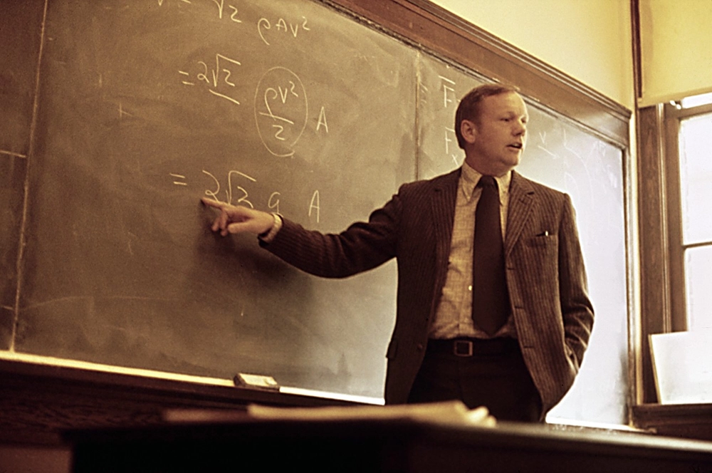

A Quiet Arrival
On July 20, 1969, Neil Armstrong became the first person to walk on the Moon. Two years later, he did something almost nobody expected: he left NASA and went back to school, this time as a teacher. In 1971, he became a professor of aerospace engineering at the University of Cincinnati.
UC made sense for an Ohio native. The campus sat about 113 miles from his hometown of Wapakoneta, and its aerospace engineering program, started in 1929, was the second oldest in the country. When UC introduced its new professor at a packed news conference that December, reporters wanted to talk about the Moon. Armstrong wanted to talk about engineering.
“Science is about what is; engineering is about what can be.”
Neil Armstrong, 2000
Professor Armstrong
His office was in Rhodes Hall, and the university went out of its way to protect his privacy. His name stayed off the office door and out of the campus directory. An assistant handled the steady flood of interview requests, photo requests and fan mail.
Students, though, came first. Former students remember a teacher who rarely mentioned the Moon at all. He would much rather talk about airplanes. In one class, he and his students folded paper airplanes to study how things fly.
Outside the classroom, he was easier to know than his famous name suggested. He went to lunch with colleagues, talked in the hallways, and, according to one former colleague, played a fiercely competitive game of euchre at a student-faculty gathering in the Rhodes Hall basement lab.
A Legacy in Rhodes Hall
Armstrong left UC in 1979. He spent more than eight years on campus, longer than his career as an astronaut. He died on August 25, 2012, at age 82.
Today, a life-size bas-relief of Armstrong greets everyone who walks into Rhodes Hall, the same entrance he used each morning. It was based on a 1974 photo taken by one of his own students.